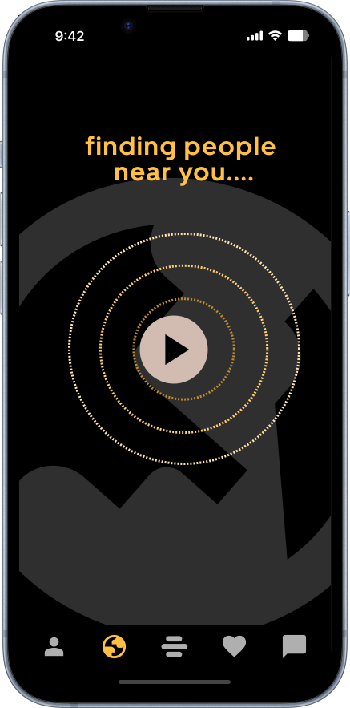
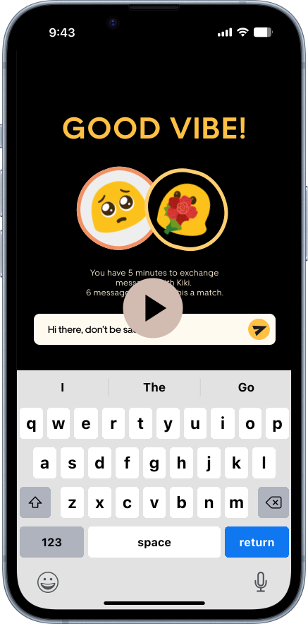
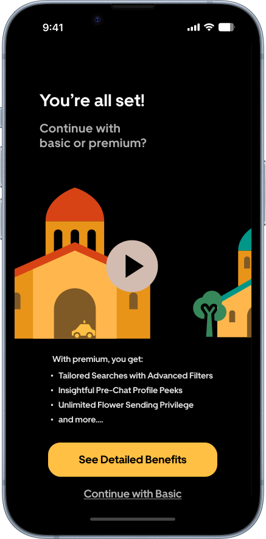
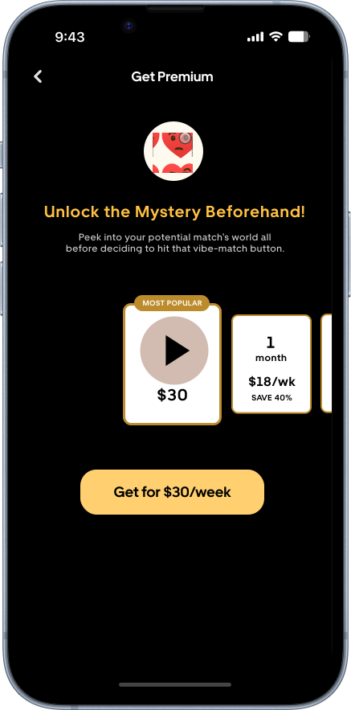
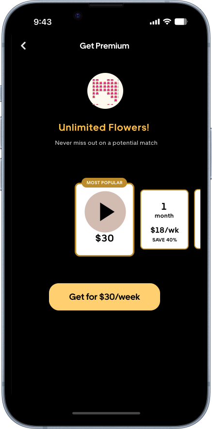

Table of Contents
1 Month (Spring 2024)
Interaction Design
UI Design
Bumble Dating App
Advisor: Auldyn Matthews, Sinan Goral
Individual Project
OVERVIEW
A Map Feature Based on Geolocation
This project embarked on the creation of Vibely, a map feature within
the Bumble dating app designed to transform how users connect by
leveraging real-time location services. The intent was to enhance the
digital interaction experience.
By allowing users to create and customize avatars reflecting their
mood or preferred activities, complete with unique catchphrases,
Vibely adds a new dimension of personal expression to the Bumble
profile. This interactive map showcases nearby users as animated
avatars, making the digital space feel more tangible and connected.
ROLE
Product/UI/Interaction Design
As a one-person team, my role encompassed various facets of design:
-
Product Design: Defining the functionality and features of Vibely, such as avatar customization, real-time location-based interactions, and notification systems. This requires understanding of user needs and business goals to develop a product that is desirable.
-
User Interface Design: Crafting the visual elements of Vibely, ensuring the design was intuitive and aligned with Bumble's brand identity. This included the selection of colors, typography, iconography, and the overall layout of the map feature and avatar customization options.
-
Interaction Design: Developing the dynamic aspects of how users interact with Vibely, from tapping on avatars to initiate chats to receiving proximity alerts. My focus was on creating a seamless, engaging user journey that encouraged active participation and fostered genuine connections.
-
User Research: Conducting initial user interviews and iterative user testing.
1. A nostolgic new way of meeting online
Avatar Customize
Users personalize their presence with avatars and taglines based on their current mood or activity preference.

Interactive Map
A simplified digital map displays nearby users as avatars, facilitating a sense of community and proximity.
Direct Engagement
By clicking on an avatar, users dive into a 5-minute chat, simulating the thrill of real-world interactions.
Convo Milestone
Exchanging three rounds of messages grants access to full profiles, encouraging meaningful exchanges.

2. User Conversion? User Persuation!
Enhanced features such as viewing profiles in advance, applying advanced filters, and sending additional flowers offer deeper insights and connection potential. The user flow was meticulously designed with embedded conversion points:
Onboarding
Users are pre-exposed to the 3 benefits of Premium plan when accessing Vibely.
Advanced Filters
The option to upgrade for more refined search capabilities.
Profile Previews
Premium users gain the advantage of viewing profiles before initiating a chat.
Extra Flowers
Users can purchase additional tokens of interest to send to potential matches.
3. Users tired of the swiping paradigm

Data-informed Design Decision
This exploratory stage entailed a thorough examination of existing user behavior patterns, preferences, and the inherent constraints within the traditional frameworks of online dating. Key activities during this phase included comprehensive brainstorming sessions aimed at ideation, an in-depth competitive analysis to understand the market landscape, and the development of initial concept ideas. These ideas were then subjected to iterative feedback loops, allowing for the refinement of user flows and the overall concept idea for Vibely.
In addition to qualitative insights, a exploratory analysis of user data was conducted to inform my approach further. This analysis revealed two critical insights that shaped the development of Vibely:
Trend in Conversion Rates: There was a noticeable decline in conversion rates over time, indicating a potential loss of user engagement or interest as they continued to use the app. This trend highlighted the need for a feature that could reinvigorate user interest and engagement. This makes a strong case for the introduction of an innovative feature like Vibely.
Impact of User Interactions on Conversions: Data showed a positive correlation between the number of interactions and conversion rates. Users who engaged more frequently with others were more likely to convert to paid services. This insight underscored the importance of designing Vibely to facilitate and encourage increased interactions among users, reinforcing the concept that more dynamic and engaging features could drive higher conversion rates.
Armed with these insights, the design and development of Vibely were aligned to enhance the quality of user interactions within Bumble and to address the identified trends in user engagement and conversion, ensuring that the new feature would contribute positively to the user experience and the business metrics.

Revamping Dating App Experience with Geo-Location
Every step of the design process was anchored in a commitment to elevating the user experience and fostering greater engagement. Each aspect of Vibely, from the personal touch of avatar customization to the immediacy of real-time notifications, was thoughtfully examined to ensure it resonated with the users' needs and aligned with Bumble's strategic vision. I made it a point to continuously refine the design brief, integrating fresh insights from user interviews to ensure that the project remained on course and didn't become a reflection of my personal biases. The introduction of emoji avatars and system-generated aliases, for instance, was a strategic move aimed at safeguarding privacy while simultaneously building a sense of community and enhancing the joy of the user experience.
In addressing the unique challenges faced by new Bumble users, especially those in smaller cities or hesitant to invest in premium features, a focused approach to problem framing was essential. The core issues identified included a lack of matches and a limited exploration of the app's capabilities. In smaller towns where the user base is naturally smaller, the app's standard recommendation algorithms that prioritize geographical proximity, might not serve these users well. Additionally, the hesitation to spend on premium features like spotlights, coupled with the frustration of running out of likes without successful matches, further compounded the challenge.
To tackle these issues while leveraging geo-location functionality, four innovative concept ideas were brainstormed:
- Buzz Alerts: This feature would leverage real-time notifications to alert users when a highly compatible potential match is nearby, enhancing the spontaneity and relevance of connections.
- Mood-Based Matching: Going beyond mere geographical proximity, this concept proposed matching users based on their current mood or desired activity, adding depth to the matching process.
- Flash Gather: Aimed at facilitating immediate social interactions, Flash Gather would enable users to organize or join short-notice meetups with nearby members who share similar interests, perfect for impromptu coffee breaks or lunch dates.
- Path Crosser: By highlighting users whose paths you've crossed during the day, this feature aimed to create a sense of familiarity and serendipity, potentially making the digital connection feel more grounded in the real world.
After consideration on feasibility, a decision was made to combine the strengths of the first three concepts—Buzz Alerts, Mood-Based Matching, and Flash Gather—into one cohesive prototype.
As it turns out, PRIVACY matters
In crafting Vibely's unique appeal, a pivotal decision was the introduction of a streamlined digital map showcasing nearby users through avatars. This innovative feature was designed to set Vibely apart from traditional dating apps, offering a fresh perspective on user interaction within their local environment. Complementing this, we integrated notifications alerting users when a match was within a half-mile radius, injecting a sense of immediacy and thrill into potential meetings.
Throughout the design process, I connected with users to gather their thoughts on the nascent Vibely feature. Hannah (pseudonym, the same below), one of the users I matched with, shared her excitement about the feature, her messages brimming with enthusiasm for the real-time map concept. "Seeing who's nearby feels like a fresh twist to online dating. It makes connections feel more tangible," she wrote.
Despite the positive reception, it became clear that the visualization of users' avatars based on proximity wasn't as intuitive as expected. To address this, I refined the user interface by incorporating a dynamic loading animation and a more prominent display of distances on the main map view. These enhancements aimed to clarify the spatial relationship between users.
The dialogue on proximity alerts took an interesting turn during a chat with another user, Alex. He remarked, "Getting a ping when a potential match is just around the corner might be the spontaneity we need! 🤔" capturing the essence of excitement the notification feature could bring.

It was my chat with Matt that introduced a critical perspective on one of Vibely's engagement mechanisms. Matt, striking me with his thoughtful and detailed messages, expressed concerns about the initial requirement of exchanging 20 messages to establish a match. "I tend to write longer, more meaningful messages," he explained, "and reaching a 20-message threshold in just 5 minutes feels a bit daunting. It might discourage deeper conversations from the get-go."
These virtual conversations with Bumble users provided invaluable insights. Hannah and Alex's enthusiasm validated the feature's novel approach to enhancing user interaction, while Matt's feedback prompted a reevaluation of engagement thresholds, ensuring that Vibely would cater to a diverse range of communication styles within the Bumble community.
To further enrich the user experience and boost engagement, I looked to Duolingo for inspiration and introduced interactive widgets and timely notifications. These widgets dynamically adapt, reflecting the vibe of nearby users and the time of day, creating a more personalized and responsive ecosystem.

The addition of an optional tagline input came directly from user feedback. Raquel, another tester, suggested, "It'd be cool to have a bit of text, something fun or quirky that shows what I'm about or what I'm looking for." This feature allowed users to express their intentions or mood beyond just the avatar, adding depth to their digital presence. This switch from real names to aliases was another pivotal change informed by user feedback. "I like the idea of a bit of mystery, using an alias makes it feel safer and more intriguing."

The onboarding experience was also revamped. Initially, some users like Linxi struggled to grasp the full breadth of Vibely's capabilities without guidance. This led to the introduction of onboarding screens that succinctly communicated the feature's essence and how to navigate it.
The concept of sending flowers as a gesture of interest was born out of the playful scenario I set for the user flow where a hypothecital character Kay sets her avatar holding a bouquet in her hands meets Allison and asked her out. Mason, who mused, "What if I actually could send those flowers I'm holding in my avatar?" This idea resonated with me and presented a novel conversion point. I iterated on this, integrating a feature that allowed users to send virtual flowers to one another, adding a layer of interaction and potential for engagement.
Each iteration inspired by direct user input and creative solutions to their feedback, moved Vibely closer to a feature that is more intuitive, engaging ,and also resonant more with the users' desire for meaningful and dynamic connections.
Designing Across Platforms
The evolution of Vibely's design was driven by a commitment to transcend the superficial engagement often found in the fast-paced realm of swipe-based dating apps. This helps to introduce a layer of authenticity and connection missing in modern digital interactions. Transitioning from a conventional map to a more abstract, user-friendly layout, the goal was to simplify the digital landscape, creating a space that feels welcoming and easy to explore. The main interaction paradigm of the 5-minute chat was a deliberate effort to infuse real-time excitement and promptness into user interactions, encouraging meaningful exchanges that go beyond surface-level connections.

4. Design Systems, Microinteractions, Artifacts and User
Diving into the Vibely voyage has been nothing short of an adventure. I was able to apply what I learnt about design systems and design principles into practice while having fun exploring the interaction paradigms of dating apps.
Leveraging Design Systems
Reflecting on the use of Uber's Base design system, the well-defined color system was a significant time-saver, streamlining the design process and ensuring visual consistency. However, the lack of icons within Base posed a challenge. I ended up using Google Material Symbols to fill the gap.Furthermore, merging Base's elements with the Bumble interface proved difficult, necessitating numerous customizations to align with Bumble's overall aesthetic. This experience highlighted the balance between leveraging a design system for efficiency and the need for adaptability in integrating it with existing interfaces.
The Magic of Microinteractions
Oh, the thrill of sprinkling a little magic of microinteractions into Vibely! There were numerous instances where I found myself switching between the subtle magic of 'smart-animate' and the gentle glide of 'slide-in', all in the quest for that perfectly smooth user experience. And then there was the charming moment when a tiny car made its way from a quaint green palace to a more majestic red one, a clever way to invite users to explore the premium side of things. It was like a friendly nudge, "Shall we venture further?"
The challenge of asking users to share their location or perhaps invest a bit more in a new feature could easily have been a point of contention. Yet, by weaving in these microinteractions, what might have been a moment of hesitation became an engaging, almost playful, interaction. It was a gentle reminder that even the smallest of touches can make the digital experience a lot more inviting.
Dancing with the Competitors
Venturing into design without peeking at the competition felt like tightrope walking without a net — thrilling yet daunting. I took the road less traveled by saving the part of the competitive analysis for later. This strategy paid off, keeping my creative wells unpolluted. When I finally scoped out the scene (hello, Badoo and your mood-based matching!), it was with a treasure trove of original ideas in hand. This approach of ideation before investigation is one I'd take away for future projects.
A Lesson in Listening
The allure of a real map feature was almost irresistible! As a habitual "yes" person to app permissions, I initially underestimated the privacy red flags. But, a chat with seasoned Bumble bees taught me a valuable lesson: privacy is paramount (turns out, 3 out of 4 users echo this sentiment). This epiphany led to a creative pivot in how the map was presented, underscoring the golden rule: user feedback is the north star that guides the journey of innovation. A callback to last semester's semi-autonomous vehicle interaction design reflection on involving the user at earlier stages - embracing user insights at every twist was pivotal in molding Vibely into a feature that truly goes belonged.
MORE PROJECTS
PlanPal
PlanPal is an AI-powered mobile app incorporating 4 AI agents with different interaction styles that aims to help users set and achieve personalized goals through scaffolded guidance, personalized feedback, and motivational coaching.

YUPI
YUPI is a smart, centralized platform designed for urgent-care services that makes doctor-patient interactions clearer and more effective than ever before.

BIKELINK PRO
A semi-autonomous e-bike with interfaces that employs human-centered design methodologies and principles of typography, color, and composition to set paradigms for interactions.

PETSPHERE
PetSphere is a pet community social web application that connects pet owners and pet service providers. I worked as a UI designer and front-end/back-end developer for the project.